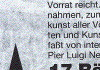
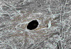
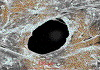
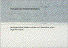

DURCHSCHLAGEN
|
Beim Durchschlagen handelt es sich um punktuelles
bzw. auch partielles Durchdringen der Druckfarbe
eines Rückseitendrucks zur Vorderseite des
Papiers. Das Durchschlagen tritt meistens auch in
Kombination mit dem Durchscheinen der Druckfarbe
(siehe dort) auf und wird dann allgemein mit dem
Begriff Rückseitenschwärzung beschrieben
(Abb. 1 und Abb. 2). Im Extremfall leidet die
Lesbarkeit und die Bildinformation unter dem
Durchschlagen.
|
|
Abb. 1: Partielles Durchschlagen der
Druckfarbe.
|
|
|
|
Mögliche Ursachen:
|
|

|
|
Abb. 2: Vergrößerter Ausschnitt von
partiellem Durchschlagen der Druckfarbe.
|
|
|
|

|
|
Abb. 3: Nadelloch (pinhole) in
Dünndruckpapier.
|
|
|
|

|
|
Abb. 4: Nadelloch in Dünndruckpapier,
vergrößerter Ausschnitt.
|
|
|
|
|
|
Abb. 5: Reklamierter Druck.
|
|
|
|
|
|
Abb. 6: Nicht reklamierter Druck.
|
|
|
|

|
|
Abb. 7: Probedruck von Papier mit pinholes -
Durchschlagen auf der Rückseite.
|
|
|
|

|
|
|
|
|
|

|
|
|
|
|
|
|
Eine papierbedingte Ursache für das Durchschlagen liegt
vor, wenn insbesondere dünne, leichtgewichtige Papiere
mit zu hoher Porosität bedruckt werden. Eine hohe
Porosität hat ein hohes Saugvermögen zur Folge,
was zum Durchschlagen der Druckfarbe führen kann. Eine
starke Wolkigkeit - also eine hohe Anzahl von dünneren
Stellen im Papier - oder vor allem Fehlstellen im Papier wie
z. B. „pinholes“ (Abb. 3 und Abb. 4) verursachen
ebenfalls papierbedingtes Durchschlagen der Druckfarbe.
Pinholes entstehen durch Luftblasen in der Fasersuspension
bei der Blattbildung auf dem Sieb der Papiermaschine.
Aufgrund der eingeschlossenen Luft ist an diesen Stellen
keine ausreichende Faserverbindung möglich.
Seitens der Druckfarbe kann das Durchschlagen bedingt durch
eine zu niedrige Viskosität der Druckfarbe auftreten.
Je dünnflüssiger die Druckfarbe ist, desto mehr
dringt sie beim Bedrucken in das Papiergefüge ein und
kann - speziell beim Einsatz von leichtgewichtigen,
dünnen Papieren - ein Durchschlagen hervorrufen.
Die Farbschichtdicke hat auch einen Einfluss auf das
Durchschlagen. Bei Überfärbung bzw. entsprechend
zu hoher Farbschichtdicke auf dem Papier wird die Tendenz
zum Durchschlagen verstärkt.
|
Mögliche Abhilfen:
|
|
Insbesondere beim Bedrucken von leichtgewichtigen Papieren
ist darauf zu achten, dass Papiere mit möglichst
geringer Porosität und optimalem Leimungsgrad
eingesetzt werden, um ein übermäßiges
Penetrieren der Druckfarbe zu vermeiden. Optimal wäre
es, wenn für Drucksachen auf leichtgewichtigen Papieren
sog. pigmentierte Papiere eingesetzt werden. Pigmentierte
Papiere haben ein dünne Strichschicht (< 5
g/m2 ) und somit gegenüber ungestrichenen
Papieren einen z. T. wesentlich geringeren Farbbedarf.
Dadurch kann gegenüber ungestrichenen Papieren mit
geringerer Farbgebung bei gleicher Farbdichte gedruckt
werden. Je geringer die Farbmenge auf dem Papier ist, desto
geringer ist auch die Gefahr des Durchschlagens.
Bei farbigen Abbildungen kann dies auch reprotechnisch durch
eine Unterfarbenreduzierung (UCR) bewirkt werden.
Es ist wichtig, dass die Viskosität der Druckfarbe
optimal auf das zu bedruckende Papier eingestellt ist. Zu
niedrige Viskosität der Druckfarbe sollte dringend
vermieden werden. Auf Zusatzstoffe für die Druckfarbe,
die eine Viskositätsverringerung bewirken, ist
ebenfalls zu verzichten.
Außerdem solte übermäßiges Emulgieren
der Druckfarbe vermieden werden, weil dadurch ebenfalls eine
Verringerung der Viskosität stattfindet. Durch
regelmäßige Dichtekontrolle der Volltondichten
kann die Gefahr der Überfärbung des Drucks
vermieden werden.
|
Beispiel(e):
|
|
Durchschlagen der Druckfarbe wegen Fehler im
Papier:
Eine vierfarbige Zeitungsbeilage - gedruckt auf SC-Papier im
Rollenoffset - wurde beanstandet, weil das Druckergebnis
nicht dem der Parallelproduktion einer anderen Druckerei
entsprach. Im einzelnen wurde dabei das wolkige Aussehen des
Druckbildes und vor allem das Durchscheinen/Durchschlagen
des Rückseitendrucks zur Vorderseite des Papiers
beanstandet (Abb. 5 und Abb. 6). Von beiden Produktionen
lagen unbedruckte Papiermuster für Untersuchungen
vor.
Die Untersuchungen zeigten, dass - entgegen den Vorgaben des
Auftraggebers - die beiden Teilproduktionen mit
unterschiedlichen Papierqualitäten gedruckt wurden. Das
für die beanstandete Produktion vorliegende Papier
zeigte im Gegensatz zur nicht beanstandeten Produktion eine
wolkigere Struktur, geringere Weiße und geringere
Opazität. Vor allem fiel aber im Durchlicht bei der
beanstandeten Qualität eine hohe Anzahl von pinholes
(Nadellöcher im Papier) auf. Die Auswirkungen der
pinholes auf das Durchschlagen der Druckfarbe sollten mit
einem Probedruck unter Verwendung der Kombination:
Auflagenpapier/Auflagenfarbe geprüft werden. Um dabei
ein eventuelles Durchdringen der Druckfarbe sichtbar machen
zu können, befand sich ein weiteres unbedrucktes Papier
unter dem zu bedruckenden Streifen. Dieser Test zeigte im
Bereich der pinholes ein deutlich erkennbares Durchschlagen
der Druckfarbe auf das im Probedruck darunter liegende
Papier (Abb. 7). In Kombination mit der geringen
Opazität des Papiers kam es dadurch dann zum
hauptsächlich beanstandeten Durchschlagen/
Durchscheinen der Druckfarbe. In diesem Reklamationsfall war
die Druckerei für den Schaden verantwortlich, weil -
entgegen den Abmachungen - eine minderwertigere
Papierqualität eingesetzt wurde.
|
Allgemeine Hinweise:
|
|
Für den Reklamationsfall:
Unbedrucktes Papier (ca. 20 Blatt DIN A4 eines jeden Stapels
bzw. von jeder Rolle) bereitstellen.
Druckfarbenprobe (aus dem Farbkasten) sicherstellen.
Bedruckte Bogen sicherstellen.
Vergleichsdrucke bzw. Vergleichspapier sicherstellen.
Produktionsdaten protokollieren.
|
|
|
|
|
|
|
Kontakt:
zins@fogra.org
|
Dur-zin-200111
|